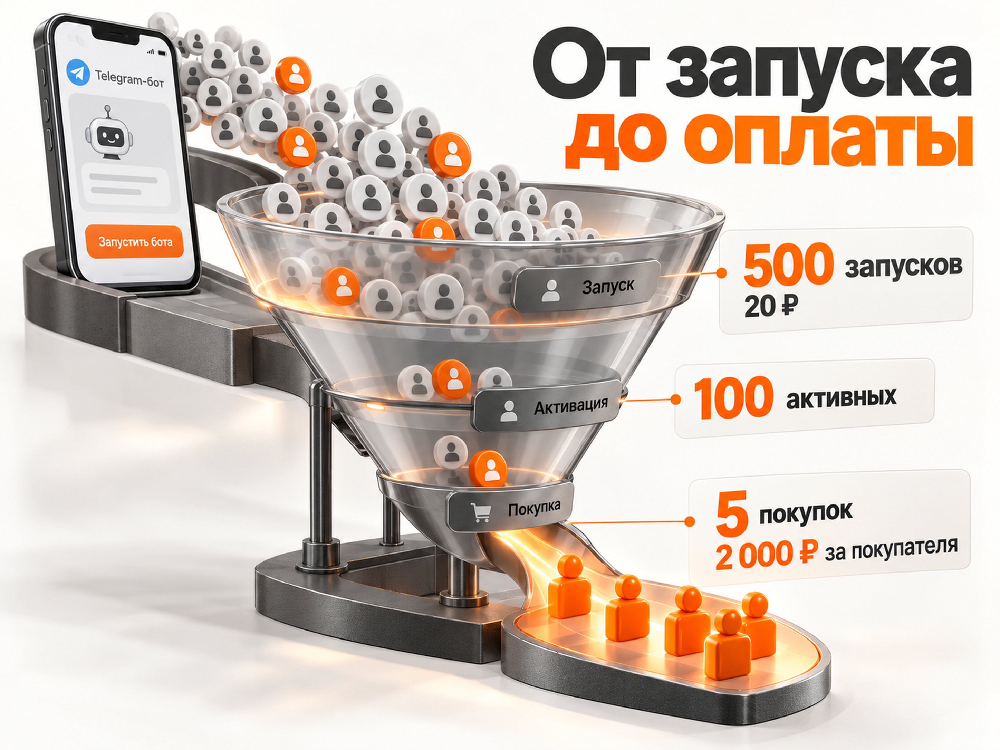

Блог о платном трафике
Продвижение Telegram-бота в 2026 году: как привлекать пользователей с маленьким бюджетом
Привлекать пользователей в Telegram-бота можно через рекламу, тематические сообщества, партнёрства, реферальные программы и поисковый трафик. Но если проект располагает небольшим бюджетом и рассчитывает получать активного пользователя за 15‑25 ₽, обычная закупка рекламы редко становится универсальным решением.
Для такой экономики важнее найти аудиторию с конкретной потребностью, предложить ей полезный сценарий и сократить путь до первого результата. Причём считать нужно не просто переходы и запуски бота, а людей, которые действительно воспользовались продуктом.
Разберём способы продвижения, опубликованные результаты 2026 года и расчёт рекламного бюджета. Отдельно рассмотрим ситуацию небольшого проекта, которому приходится конкурировать за внимание пользователей с ограниченными финансовыми возможностями.
Сколько стоит привлечение пользователя в Telegram-бот в 2026 году
Единой рыночной стоимости пользователя Telegram-бота нет. Цена зависит от тематики, источника трафика, полезности продукта и того, какое действие рекламодатель считает результатом.
Важно не путать четыре показателя.
| Показатель | Что означает |
|---|---|
| Переход | Человек нажал на рекламную ссылку |
| Запуск бота | Нажал «Начать» и отправил команду /start |
| Активный пользователь | Выполнил заранее определённое полезное действие |
| Платящий пользователь | Оплатил товар, услугу или подписку |
Например, бот для подготовки к экзаменам может считать активацией прохождение первого теста. Для бота-напоминателя это может быть создание двух напоминаний и возвращение на следующий день.
Во втором случае стоимость привлечения будет зависеть не только от рекламы, но и от того, захотел ли человек продолжить пользоваться продуктом.
Какие цены встречаются в исследованиях 2026 года
По данным Telegue за июнь 2026 года, стоимость подписчика Telegram-канала через посевы в разных нишах составляла примерно от 50 до 680 ₽. В маркетинге и SMM встречался диапазон 140‑330 ₽, в тематике семьи и родительства - 90‑240 ₽.
В исследовании eLama, опубликованном в августе 2026 года, стоимость подписчика Telegram-канала через Telegram Ads в отдельных тематиках составляла от 0,3 до 14,8 €.
Это показатели подписок на каналы, а не запусков или активаций ботов. Переносить их непосредственно на продвижение Telegram-сервисов нельзя.
Главный вывод: стоимость запуска бота за 25 ₽ теоретически возможна, но получить за те же деньги пользователя, который вернулся и начал пользоваться продуктом, значительно сложнее.
Надёжного исследования, подтверждающего стабильную среднерыночную стоимость активного пользователя Telegram-бота на уровне 15‑25 ₽ в России в 2026 году, нет. Такой показатель следует рассматривать как индивидуальную бизнес-цель, а не рыночный стандарт.
Почему дешёвый запуск бота не означает дешёвого клиента
Представим рекламную кампанию, которая принесла 500 запусков Telegram-бота по 20 ₽. Расход составил 10 000 ₽.
На первый взгляд результат выглядит привлекательным. Но если только 100 человек воспользовались основной функцией, стоимость активного пользователя уже составит 100 ₽.
Если из этих ста человек подписку оплатили пять, стоимость платящего пользователя достигнет 2000 ₽.
Получается, один рекламодатель может отчитаться о запуске за 20 ₽, а другой по тому же проекту увидит реальную стоимость привлечения покупателя в 100 раз выше.

Поэтому для подписочных продуктов стоит контролировать сразу несколько этапов:
- Сколько людей перешло по рекламе.
- Сколько запустили бота.
- Сколько получили первый полезный результат.
- Сколько вернулись на следующий день и через неделю.
- Сколько оплатили продукт.
- Какой доход принесли привлечённые пользователи.
У Telegram-ботов особенно важно отслеживать возвращение. Человек может открыть сервис из любопытства, нажать несколько кнопок и больше никогда им не пользоваться.
С чего начинать продвижение Telegram-бота
Прежде чем покупать рекламу, нужно убедиться, что бот действительно решает понятную задачу и пользователь может быстро получить результат.
Начинать лучше не с перечисления всех возможностей, а с одной конкретной ситуации.
Например, вместо предложения «Умный бот для управления задачами» можно показать более определённую пользу: «Напомнит родителям о важном деле и сообщит, когда оно выполнено».
Такой подход помогает сразу отделить потенциально заинтересованного человека от случайного посетителя.
Найдите одну аудиторию с конкретной потребностью
У небольшого проекта редко хватает бюджета, чтобы одновременно проверять десятки аудиторий.
Лучше выбрать одну или две группы с максимально понятным запросом. Для бота-напоминателя это могут быть люди, которым нужно координировать семейные дела, или пользователи, регулярно забывающие повторяющиеся задачи.
При этом важно проверить существующие альтернативы. Если человек уже решает задачу календарём или обычными сообщениями, новая функция должна давать заметное преимущество.
Упростите первый запуск
На первом экране бота должно быть понятно:
- Какую задачу он решает.
- Что произойдёт после нажатия кнопки.
- Как быстро пользователь получит результат.
Для простого сервиса желательно предоставить основной сценарий сразу, не требуя длинной регистрации, заполнения анкеты или изучения инструкции.
Если человеку нужно выполнить семь действий, прежде чем он поймёт пользу продукта, рекламный трафик будет теряться независимо от качества настройки кампаний.
Проверьте активацию без большого бюджета
Покажите бота небольшой группе потенциальных пользователей, соответствующих выбранному сегменту. Попросите самостоятельно выполнить основную задачу, не объясняя интерфейс.
Посмотрите, где возникают затруднения, какие функции остаются непонятными и почему люди не возвращаются.
Это не заменяет полноценное исследование спроса, но помогает обнаружить очевидные проблемы до покупки трафика.
Бесплатные и бюджетные способы продвижения Telegram-бота
Для небольших проектов нет одного универсального дешёвого канала. Наиболее перспективны методы, в которых уже присутствует подходящая аудитория или пользователи сами заинтересованы рекомендовать продукт.
| Способ | Денежные расходы | Основное ограничение |
|---|---|---|
| Собственный сайт, канал, рассылка | Низкие | Нужна существующая аудитория |
| Партнёрства с сообществами | Низкие или договорные | Нужно предложить пользу партнёру |
| Реферальная программа | Бонусы или разработка | Пользователи должны хотеть приглашать друзей |
| SEO и полезный контент | Время и создание материалов | Результат появляется не сразу |
| Взаимные рекомендации с ботами | Договорные | Сложно найти подходящих партнёров |
| Посевы в небольших каналах | Оплата размещений | Нельзя гарантировать низкий CPA |
| Telegram Ads | Рекламный бюджет, комиссии | Стоимость активации зависит от всей воронки |
| Яндекс Директ | Рекламный бюджет | Холодный трафик может быть дорогим |
1. Партнёрства с небольшими тематическими сообществами
Для малобюджетного проекта это один из первых способов, который имеет смысл проверить.
Вместо покупки рекламы в крупном канале можно найти администратора небольшого сообщества, аудитории которого бот помогает решить реальную проблему.
Например, для сервиса планирования семейных задач потенциальными партнёрами могут быть сообщества для родителей, организаторов мероприятий или специалистов по продуктивности.
Предлагать стоит не абстрактное рекламное размещение, а полезную функцию для участников сообщества.
Алгоритм действий:
- Собрать список 20‑30 небольших релевантных сообществ.
- Проверить активность аудитории и содержание публикаций.
- Подготовить конкретный сценарий использования бота.
- Предложить партнёру совместный материал, тестовый доступ или понятную партнёрскую механику.
- Выдать отдельную ссылку и измерить количество активированных пользователей.
Например, сообщество для родителей может получить готовый сценарий напоминаний о школьных мероприятиях.
Важно учитывать, что партнёрское размещение не обязательно будет бесплатным. Администратор должен понимать, какую пользу получают его подписчики или он сам.
2. Реферальная программа и рекомендации пользователей
Если бот помогает человеку взаимодействовать с другими людьми, приглашение может стать естественной частью использования продукта.
Например, один пользователь создаёт совместную задачу и предлагает второму человеку подтвердить её выполнение.
Приглашённый открывает бота не ради бонуса за регистрацию, а потому, что ему уже нужно выполнить конкретное действие.
Это потенциально сильнее обычной механики «Пригласи друга и получи скидку», поскольку у приглашения есть практический смысл.
Для запуска реферальной программы необходимо предусмотреть:
- Персональную ссылку пользователя.
- Передачу идентификатора пригласившего.
- Учёт реальных активаций вместо простых переходов.
- Начисление бонуса после полезного действия.
- Защиту от повторных регистраций и искусственных приглашений.
Для платного подписочного продукта вознаграждение можно выдавать дополнительными функциями или временем доступа.
Но важно рассчитать их себестоимость. Бесплатный рекламный канал может перестать быть бесплатным после расходов на бонусы, разработку и поддержку.
3. SEO и контент под конкретные задачи
Поисковый трафик особенно интересен небольшим проектам, которые могут вложить время в создание полезного контента, но не способны регулярно оплачивать рекламу.
Продвигать лучше не название неизвестного бота, а проблему, которую он решает.
Например, для сервиса напоминаний можно исследовать запросы, связанные с повторяющимися задачами, совместными списками дел, напоминаниями другим людям и семейным планированием.
Под каждый действительно самостоятельный поисковый интент создаётся полезный материал с инструкцией и возможностью решить задачу через бота.
Важно, чтобы статья сама отвечала на вопрос пользователя, а не существовала исключительно ради кнопки перехода.
Поисковая выдача может приводить релевантную аудиторию на протяжении длительного времени, но SEO не гарантирует бесплатных посетителей. Потребуются разработка страниц, контент и поддержка сайта.
4. Взаимные рекомендации с другими Telegram-ботами
Ещё один вариант - договориться с владельцами сервисов, которые решают смежные задачи.
Например, бот для планирования задач может быть полезен аудитории сервиса расписаний, а бот для изучения языков - аудитории образовательных инструментов.
Партнёрство может предусматривать взаимные рекомендации или вознаграждение за подтверждённую активацию.
При поиске партнёров нужно обращать внимание не на общее число пользователей бота, а на наличие живой аудитории и соответствие её интересов вашему предложению.
Отдельно стоит различать обычные Telegram-боты и Mini Apps. У Telegram есть встроенный механизм партнёрских программ для подходящих мини-приложений с покупками за Stars. Но его нельзя автоматически считать готовой реферальной системой для любого обычного бота.
5. Небольшие рекламные посевы
Размещения в небольших Telegram-каналах позволяют проверить конкретные гипотезы без крупных рекламных кампаний.
Основная задача - не найти самое дешёвое размещение, а получить доступ к аудитории с высокой вероятностью использования продукта.
При отборе каналов нужно изучить:
- Средние просмотры последних публикаций.
- Динамику аудитории и признаки накрутки.
- Частоту рекламных постов.
- Тематику и содержание обсуждений.
- Стоимость размещения относительно реального охвата.
Для поиска подходят каталоги и аналитика TGStat. Подготовить список выбранных каналов можно с помощью инструмента выгрузки каналов из TGStat.
Лучше начинать с нескольких точечных размещений с разными ссылками, чем покупать большой пакет публикаций без возможности понять результаты.
6. Каталоги ботов и органические упоминания
Профильные каталоги, обзоры инструментов и обсуждения конкретных задач также могут давать переходы.
Но рассчитывать только на них не стоит. Размещение в каталоге не означает, что пользователи автоматически найдут новый сервис.
Практический смысл есть там, где аудитория уже ищет инструмент определённого назначения.
Спам в чатах, массовые личные сообщения незнакомым пользователям и искусственные рекомендации лучше исключить. Такой трафик плохо отражает реальный спрос, может нарушать правила площадок и способен навредить репутации проекта.
Реальные кейсы: что помогало привлекать аудиторию
Опубликованные результаты показывают, что даже успешные способы привлечения сильно различаются по стоимости и качеству аудитории.
ZARINA: 70 тысяч подписчиков без внешней рекламы
В январе 2026 года Mindbox опубликовал кейс бренда ZARINA.
За полтора года Telegram-бот компании привлёк 70 тысяч подписчиков без внешней рекламной закупки. Первые 18 тысяч появились благодаря собственным рассылкам и социальным сетям бренда.
После добавления регистрации в программу лояльности через бота количество подписчиков заметно выросло. Реферальная механика, запущенная в феврале 2025 года, также стала дополнительным источником регистраций. По данным компании, среднее количество регистраций за месяц после внедрения этой механики было на 40% выше, чем в предшествующий период сравнения.
Главный урок здесь не в том, что можно бесплатно получить десятки тысяч пользователей. У ZARINA уже существовала крупная клиентская база, а значит, первоначальная аудитория не была холодной.
Интересна другая механика: пользователь получал понятную ценность и мог быстро пригласить знакомого через бота.
Для маленького проекта масштаб такого результата не является реалистичным прогнозом, но принцип полезного приглашения применим.
Исследование 15 тысяч Telegram-ботов
В августе 2026 года на Хабре опубликован анализ примерно 15 тысяч ботов, для которых отображались показатели месячной аудитории.
Исследователь изучал изменения MAU за июль и особенности быстрорастущих проектов.
Среди заметных механик встречались бесплатные функции, бонусы за приглашения и продвижение одного конкретного результата вместо набора разрозненных возможностей.
В отдельных проектах рост аудитории значительно опережал рост покупок. Это хорошо показывает ограничение реферальных программ с наградами: можно привлечь людей, заинтересованных только в бонусе.
Для платного Telegram-продукта рост запусков без роста использования и оплат нельзя считать достаточным доказательством успешного продвижения.
Кейс Telegram Ads: снижение стоимости подписки на 20%
В августе 2026 года eLama опубликовала кейс привлечения абитуриентов в Telegram-канал Международного юридического института.
За период продвижения набрали 1231 подписчика при расходе 2860 € без комиссии и НДС. Средняя стоимость подписки составила 2,3 €.
Первоначально объявления показывались сразу в нескольких каналах. Позднее специалисты перешли к раздельному таргетингу на отдельные площадки, что помогло снизить среднюю стоимость подписки на 20%.
Это кейс продвижения канала, а не бота. Его практическая ценность в методике тестирования: отдельная площадка, отдельные результаты, отключение неэффективного трафика.
Мой опыт продвижения Telegram-ботов через рекламу
В моих ранее опубликованных проектах тоже встречались разные показатели стоимости запуска.
В кейсе продвижения обучения менеджеров маркетплейсов стоимость запуска бота через Telegram Ads составляла 1,4 €. Рекламные кампании работали в 2022 году.
В проекте продвижения бесплатного мини-курса по Васту через Яндекс Директ получили 201 запуск бота по 203 ₽. Кампания проходила в октябре-ноябре 2024 года.
Это исторические результаты конкретных кампаний, а не прогноз цен на 2026 год. Их нельзя использовать как современные рыночные нормативы.
Они, однако, показывают разницу между рекламными связками, нишами и способами привлечения. И в обоих случаях главной отслеживаемой целью был запуск бота, а не последующая покупка или длительное удержание.
Реально ли привлекать активных пользователей за 25 ₽
Да, при определённых условиях такая стоимость математически достижима. Но рассчитывать на неё как на гарантированный результат платной рекламы нельзя.
Для оценки достаточно двух параметров: цены клика и конверсии рекламного перехода в активного пользователя.
Стоимость активного пользователя = стоимость клика / конверсия в активацию.
Например, если рекламный клик обходится в 5 ₽ и 20% перешедших действительно активируют бота, стоимость активного пользователя составит 25 ₽.
Посмотрим, как меняется результат при разных конверсиях.
| Цена клика | Конверсия 10% | Конверсия 20% | Конверсия 30% |
|---|---|---|---|
| 3 ₽ | 30 ₽ | 15 ₽ | 10 ₽ |
| 5 ₽ | 50 ₽ | 25 ₽ | 16,67 ₽ |
| 10 ₽ | 100 ₽ | 50 ₽ | 33,33 ₽ |
| 15 ₽ | 150 ₽ | 75 ₽ | 50 ₽ |
Все значения в таблице расчётные. Это не статистика рекламных кампаний.
Из таблицы следует важный вывод: если активация происходит только у 20% посетителей, для достижения цены 25 ₽ стоимость клика должна быть не выше 5 ₽.
Если клик стоит 15 ₽, для получения активации за 25 ₽ понадобится конверсия в 60%. Для холодного рекламного трафика это весьма требовательный сценарий.
Поэтому добиться низкой цены часто пытаются не через снижение ставки в рекламном кабинете, а благодаря более точной аудитории, понятному предложению и улучшению конверсии внутри бота.
Прогноз расходов на привлечение пользователей Telegram-бота
Для небольшого проекта рассмотрим условный тестовый бюджет 12 000 ₽.
Поскольку проверенных универсальных показателей конверсии Telegram-ботов нет, используем три модельных сценария. Они нужны для оценки чувствительности бюджета, а не для предсказания фактического результата.
| Показатель | Благоприятный | Рабочий | Осторожный |
|---|---|---|---|
| Рекламный бюджет | 12 000 ₽ | 12 000 ₽ | 12 000 ₽ |
| Цена клика | 4 ₽ | 8 ₽ | 15 ₽ |
| Переходы | 3000 | 1500 | 800 |
| Конверсия в активацию | 25% | 15% | 10% |
| Активные пользователи | 750 | 225 | 80 |
| Цена активации | 16 ₽ | 53,33 ₽ | 150 ₽ |
В благоприятном сценарии цель в 25 ₽ достигается. Но для этого одновременно необходимы недорогой трафик и высокая конверсия в полезное действие.
В рабочем сценарии стоимость уже превышает 50 ₽. В осторожном она достигает 150 ₽.
Ни один из этих сценариев не включает автоматически расходы на создание контента, работу маркетолога, комиссии рекламных посредников и вознаграждения партнёрам. Их нужно учитывать дополнительно.
Как посчитать допустимую цену активации
Начинать следует с экономики продаж.
Допустим, компания готова тратить максимум 500 ₽ на привлечение одного платящего пользователя.
Если подписку покупают 5% активированных пользователей, допустимая стоимость активации составит:
500 ₽ × 5% = 25 ₽.
Однако если из активированных пользователей оплачивают только 2%, предельная стоимость активации снизится до 10 ₽.
И наоборот, при конверсии в оплату 10% она увеличится до 50 ₽.
Это расчёт допустимых расходов, а не прогноз того, сколько будет стоить реклама.
При определении предельного CAC нужно также учитывать маржинальный доход от покупателя за весь экономически обоснованный период, повторные оплаты, возвраты и затраты на обслуживание.
Нельзя автоматически считать, что любой покупатель, привлечённый за 500 ₽, приносит проекту прибыль.
Почему стоит отдельно учитывать работу маркетолога
Если проект потратил 12 000 ₽ на рекламу и получил 225 активных пользователей, рекламная стоимость активации составит 53,33 ₽.
Но если продвижением занимался подрядчик за отдельную фиксированную оплату, реальные маркетинговые расходы будут выше.
Для оценки экономики малого проекта следует разделять рекламный CPA и полную стоимость привлечения с учётом работ и дополнительных расходов.
Особенно важно это для проектов, где ожидают десятки тысяч пользователей по минимальной цене, но не учитывают трудозатраты на их привлечение.
Стоит ли использовать Яндекс Директ и Telegram Ads
Обе рекламные системы подходят для проверки спроса и привлечения аудитории. Но при целевой стоимости активного пользователя 15‑25 ₽ их нельзя считать гарантированно дешёвыми источниками.
Telegram Ads
Официальная рекламная платформа Telegram позволяет продвигать ботов и направлять человека непосредственно в интерфейс сервиса.
В 2026 году объявления могут показываться в Telegram-каналах, чат-ботах и других поддерживаемых форматах. При выборе конкретных ботов для размещения действуют требования к размеру активной аудитории площадки.
Для небольшого проекта преимущества Telegram Ads заключаются в возможности выбирать тематические аудитории и вести человека сразу к продукту.
Основное ограничение - покупка показов не гарантирует активаций. Даже дешёвый CPM может привести к высокой стоимости полезного действия при слабом CTR или низкой конверсии.
По данным eLama за март 2026 года, минимальная ставка для большинства тематик начиналась от 0,6 € за тысячу показов, а для отдельных вариантов таргетинга на каналы, ботов и поиск - от 0,75 €. Это стартовые ставки, а не гарантированная стоимость фактического размещения.
Наиболее разумно начинать с небольшого числа тематических гипотез и раздельно измерять результаты.
Яндекс Директ
Яндекс Директ может быть полезен, когда пользователи уже ищут решение определённой проблемы.
Например, для бота с напоминаниями можно исследовать запросы, связанные с планированием и управлением задачами.
При этом далеко не каждый пользователь, который ищет подобный инструмент, захочет пользоваться им именно через Telegram.
Для такого продвижения может потребоваться отдельная посадочная страница, которая объясняет преимущества бота и переводит заинтересованного человека в мессенджер.
В отдельной статье о рекламе Telegram через Яндекс Директ я подробнее разбираю рекламные связки и отслеживание переходов.
Для маленького проекта с жёстким ограничением CPA запуск широких кампаний по холодной аудитории без предварительного тестирования экономики рискован.
Важное ограничение для рекламы в России
В марте 2026 года ФАС России разъяснила свою позицию о рекламе в Telegram и YouTube. Ведомство указало на признаки нарушения рекламного законодательства при размещении рекламы на ресурсах с ограниченным доступом, одновременно обозначив переходный период до конца 2026 года, в течение которого меры ответственности применяться не будут.
Переходный период нельзя считать безусловным разрешением размещать любую рекламу. Перед закупкой необходимо проверить действующие требования, ограничения и правила маркировки интернет-рекламы.
Для долгосрочного продвижения это дополнительный аргумент не строить весь маркетинг только на одном рекламном канале.
Как отслеживать источники и реальную активацию в Telegram-боте
Без аналитики невозможно определить, действительно ли удалось получить активного пользователя за 25 ₽.
Telegram поддерживает ссылки на ботов с параметром start. Благодаря этому разработчик может передать в бот информацию об источнике запуска.
Пример ссылки:
https://t.me/your_bot?start=partner_school_01
При запуске бота соответствующий параметр передаётся вместе с командой /start, если пользователь действительно её отправил.
Для каждого рекламного размещения или партнёрского источника следует использовать собственный идентификатор.
В базе данных желательно сохранять:
- Идентификатор пользователя.
- Источник первого привлечения.
- Дату и время запуска.
- Первое полезное действие.
- Факт возвращения на следующий день.
- Повторное использование через неделю.
- Покупку и сумму оплаты, если они есть.
Если человек перешёл по ссылке, но не запустил бота, учитывать его как активированного нельзя.
Если пользователь уже запускал сервис раньше, повторное нажатие «Начать» не должно автоматически создавать нового привлечённого пользователя.
Для каждого источника рассчитывается стоимость активации. Затем сравниваются удержание, оплаты и общие расходы.
Пример отчёта по рекламным площадкам
| Источник | Расход | Запуски | Активации | Цена активации |
|---|---|---|---|---|
| Партнёр A | 3000 ₽ | 180 | 90 | 33,33 ₽ |
| Посев B | 3000 ₽ | 100 | 30 | 100 ₽ |
| Партнёр C | 3000 ₽ | 200 | 150 | 20 ₽ |
Это условный пример, а не результаты реальной кампании.
Из такой таблицы видно, что партнёр C привёл больше активированных пользователей при одинаковом бюджете. Но окончательное решение о масштабировании следует принимать после проверки удержания и оплат.
Именно поэтому полезно передавать информацию об источнике не только в рекламный отчёт, но и в систему учёта событий самого бота.
Как протестировать продвижение за 14 дней
Небольшому проекту необязательно начинать с крупного рекламного бюджета. Первые две недели лучше посвятить проверке потребности, источников и активации.
Дни 1‑3. Подготовка продукта
Определите одно главное действие пользователя и проверьте, можно ли выполнить его без посторонней помощи.
Настройте учёт запусков, активаций и возвращений. Подготовьте несколько отдельных ссылок с параметром start.
Выберите один основной сегмент аудитории и сформулируйте предложение на языке его конкретной задачи.
Дни 4‑7. Проверка бесплатных источников
Найдите небольшие подходящие сообщества и договоритесь о первых публикациях или совместных материалах.
Проверьте собственные доступные источники: сайт, канал, клиентскую базу, тематический контент.
Если в боте предусмотрена возможность приглашения другого пользователя, проверьте её удобство и отслеживание.
Не пытайтесь запускать все способы одновременно. Важно понять, откуда приходят люди и какие действия выполняют.
Дни 8‑11. Малые платные тесты
Выберите несколько перспективных размещений.
Для каждого установите ограничение расходов и отдельную ссылку. Сравнивайте результат только после того, как у привлечённых пользователей было время выполнить целевое действие и вернуться в установленный период.
Не стоит признавать кампанию успешной сразу после появления дешёвых запусков.
Если площадка расходует бюджет, но не приносит активаций, нужно проверить соответствие аудитории и рекламного обещания фактическому продукту.
Дни 12‑14. Оценка и решение
По каждой площадке определите:
- Фактическую стоимость активированного пользователя.
- Долю пользователей, вернувшихся в бот.
- Количество оплат, если период наблюдения позволяет их оценить.
- Суммарные расходы, включая дополнительные затраты.
- Возможность увеличения объёма без потери качества.
Если тест дал мало активаций, не стоит делать точный прогноз масштабирования по двум-трём пользователям.
Нужно продолжить сбор данных или признать, что текущего бюджета недостаточно для статистически устойчивого вывода.
Когда продвижение Telegram-бота лучше отложить
Бывает ситуация, когда сам продукт существует и технически работает, но пользователи не видят причин переходить на него с привычных инструментов.
В этом случае даже качественная реклама может приводить дешёвые запуски, которые не превращаются в регулярное использование.
Основные сигналы проблемы:
- Пользователям приходится долго объяснять назначение продукта.
- Основную функцию пробуют один раз и больше не возвращаются.
- Бесплатный аналог закрывает ту же потребность без дополнительных усилий.
- Реферальные бонусы привлекают пользователей, но не увеличивают использование.
- Низкая конверсия в оплату делает даже дешёвую активацию невыгодной.
При таких условиях правильнее временно сократить рекламные расходы и проверить предложение.
Иногда достаточно изменить позиционирование или упростить интерфейс. В других случаях необходимо найти новый сценарий использования, за который люди действительно готовы платить.
И только после этого имеет смысл вновь проверять масштабируемость платного трафика.
Итог: какой способ продвижения Telegram-бота выбрать
Если бюджет ограничен, начинать стоит с проверки полезности бота, небольших тематических сообществ, партнёрских рекомендаций и тех источников аудитории, которые уже доступны проекту.
Реферальные программы особенно интересны сервисам, в которых приглашение другого человека естественно связано с основной функцией.
SEO и полезный контент подходят для долгосрочного привлечения пользователей с конкретной потребностью. Посевы и платную рекламу имеет смысл подключать после настройки аналитики и проверки первых активаций.
Получать активного пользователя Telegram-бота за 25 ₽ возможно при удачной экономике воронки, но это не универсальная рыночная цена и не гарантированный результат.
Главная задача небольшого проекта заключается не в поиске самого дешёвого трафика, а в привлечении людей, которым действительно нужен продукт и которые продолжат им пользоваться.